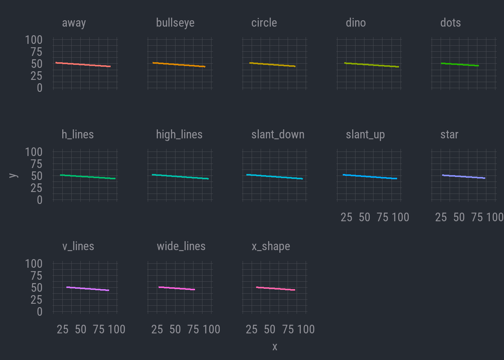
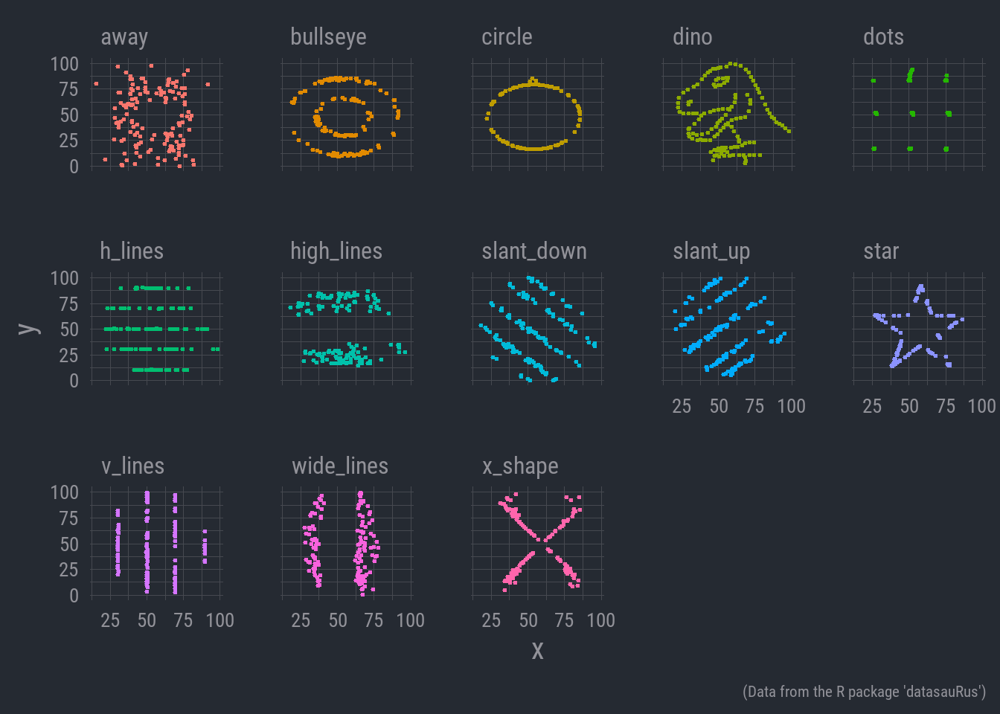

| Mean (x) | Mean (y) | SD (x) | SD (y) |
|---|---|---|---|
| 54.3 | 47.8 | 16.8 | 26.9 |
| 54.3 | 47.8 | 16.8 | 26.9 |
| 54.3 | 47.8 | 16.8 | 26.9 |
| 54.3 | 47.8 | 16.8 | 26.9 |
| 54.3 | 47.8 | 16.8 | 26.9 |
| 54.3 | 47.8 | 16.8 | 26.9 |
| 54.3 | 47.8 | 16.8 | 26.9 |
| 54.3 | 47.8 | 16.8 | 26.9 |
| 54.3 | 47.8 | 16.8 | 26.9 |
| 54.3 | 47.8 | 16.8 | 26.9 |
| 54.3 | 47.8 | 16.8 | 26.9 |
| 54.3 | 47.8 | 16.8 | 26.9 |
| 54.3 | 47.8 | 16.8 | 26.9 |
Introduction
Up to this point, we have worked with pretty simple visualizations, just so we can quickly glean important information about our statistical models without spending too much time focusing on the aesthetics of the visuals.
In this lab, we will learn a bit more about R’s graphical capability—especially through tidyverse’s ggplot—which provides us with incredible customizability. We will learn how to fine-tune some of the visuals we have already worked with, and we will preview some other common visual styles that can manage with ggplot.
Visualization and Analytical Thinking
Before we start working with some of these new visual tools, I want to take an opportunity to stress the importance of visualization more generally. It’s easy to see the process of presenting visuals as something somewhat superficial, but visualization can be critical for defining the kind of questions we can ask about our data.
For now, I’m going to obscure the code I’m using for this document. We will learn more about the kind of commands I used to generate the following figures, but I don’t want anyone to get bogged down initially. I’ll use these visuals to help impart an important lesson about data visualization’s in the research process.
Thirteen Data Sets
Let’s take a look at a collection of thirteen different data sets. Each data set has 142 observations with 2 columns, labeled x & y.
I’ll use some tidyverse commands to get some summary statistics for each of the data sets, including the mean of both variables and their standard deviations. Let’s see what seems to distinguish some of these data sets from one another.
Well, there’s not much we can say here. All the summary statistics are identical. Why don’t we try modeling a linear relationship between the x and y variables. Maybe looking at the correlations will tell us something. I’ll display the linear regression lines for each data set below.

Okay. This is not revealing much either. All the lines seem to have the same slope, which shows a (slight) negative relationship where y decreases as x increases. The correlations aren’t revealing any notable distinctions.
But wait. One thing we can see here is that, while the correlations appear to be about the same, there are some differences in the ranges of values. Note that the regression lines don’t extend across the same range of x-axis values in each data set. Maybe there is something here after all.
Let’s just go ahead and plot the actual data.

Now there’s some distinction!
This is a tongue in cheek data set known as the ‘datasaurus dozen’. It’s often used in intro statistical classes to help illustrate the importance of visualization. It’s inspired by another conceptually similar data set known as ‘Anscombe’s quartet’ which likewise stresses the role of plotting data in producing well informed analyses.
In Sum
So, take this as a showcase of the importance of visualizing your data. This isn’t to discount summary statistics and other numeric description of data—those are still invaluable for us.
Rather, cases like Datasaurus or Anscombe’s quartet highlight the necessity of understanding the shape of your data. This will determine the kind of questions you can ask with the data, as well as the kind of statistical tools you need to describe it.
For example, in the case we just examined, those x and y variables do not have any kind of clear linear relationship. In that case, tools like standard OLS regression that assume linearity are not appropriate. Any relationship between the variables could only be explored through other statistical means.
So, making our figures and tables look aesthetically pleasing is indeed valuable in its own right, but don’t underestimate the utility of good visualization for the analytic process itself.